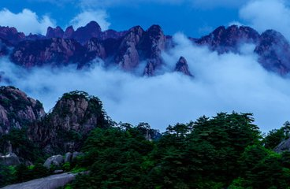
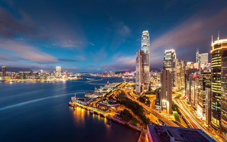
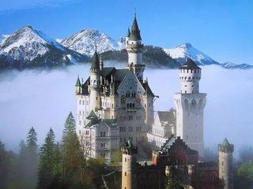
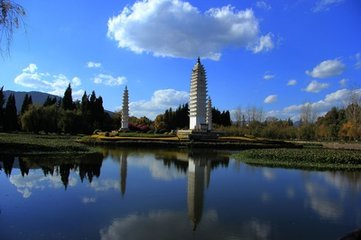

游记 Travel notes


【黄山】壮美仙山
早听说黄山有奇松、怪石，形势陡峭的特点，今天我可算是领
会到了。站在山脚下看巍峨的山峰。云朵仿佛在山峰之间。看
着奋力攀登的游人，我们也开始动身了。缆车很快把我们送到
了山顶，我呼吸着新鲜的空气，心情格外舒畅。观看美景，我
发现黄山的松树与其他山的松树是不同的，苍劲的树干，翠绿
的松针，十分壮观。最有名的还要算玉屏峰边的...........

【香港】东方明珠
香港是我们国家不可分割的地方，那里不但风景优美，而且还有
很多出名的好地方。这次寒假，我去了香港，让我来给你们介绍
一下吧。香港的迪士尼很出名。迪士尼一共分为四个区，每个区
各具特色，比如“美国小镇”，全是美国的西部风光；“童话世界”
里全是我们我们熟悉的卡通人物的天下，有米奇，有唐老鸭，有
高飞······ 香港的交通非常方便，强........

【卢森堡】千堡之国
卢森堡位于阿尔泽特河和佩特鲁斯河交汇的河谷地带，正处德、
法间的交通要道。新旧两城被河谷分为两部分，有１００多座
造型各异的大小桥梁架在河谷上，其中有古色古香的砖桥也有
，被冠以“桥梁之城”的美名。下面咱们着重说说美国军事墓地
和纪念碑。这个地方之前了解的并不多，而且这里距离卢森堡
的市中心有点远。公墓在卢森堡郊外，已经离.......

 回到顶部
回到顶部
【云南】天然花园
大理位于云南省中部偏西，总面积 29459平方公里，其中山地
面积1278.8平方公里，地域辽阔，资源丰富，山川秀丽，四季
如春，是祖国大西南一块待开发的宝地。大理市是人理白旅白
治州州府所在地，全州政治经济文化中心，集“全国历史文化名
城”、“国家级风景名胜区”、“_国家级自然保护区”、中国优秀
旅游城市”、“最佳中国魅力城市”和.......
回到顶部